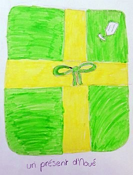

Fort Lauderdale,
Florida, USA.
Lé 13 dé dézembre, 1980
Moussieu l'Rédacteu,
À forche dé crier Noué, i' veint! Eh bein, n'en v'là un aut' tch'appréche, et il est temps d'en souhaiter un bouan à touos l's anmîns en Jèrri et à l'êtrangi. J'ai env'yé des cartes d'Noué à eune chentaine d'anmîns, mais j'crains tch'i' n'arrivethont pon en temps pour lé bieau jour tch'est, pour les Chrêtchiens, lé sŷmbole dé la naîssance dé Nouotre Seigneu Jésû Christ, ouaithe tch'i' n'est pon considéthé d'chu point d'veue réligieux par un tas d'monde à ch't heu tchi n'pathaîssent pon l'saver, ou en faithe la minne.

Quand j'tais tout mousse en Jèrri j'criyais qué Papa Noué s'en allait d'scendre par la cheunm'née pour mett' des codrettes, et p't-êt' eune orange, dans ma cauche tch'était pendue à côté d'l'âtre pour l'occâsion. Mais l'temps vînt pus tard qué la Mêsse dé Mîniet à onze heuthes la Sèrvelle dans l'Églyise dé St, Simon mé donnait la chance dé célébrer les preunmié munnutes dé la commémorâtion dé la naîssance en chantant l' "Adeste Fideles" dans un lieu réligieux et à propos pour l'occâsion solonnelle. Dans chu temps-là l'églyise 'tait plieine dans les grand' fêtes comme Noué et Pâques, et i' fallait êt' là d'bouanne heuthe pour pouver trouver eune pliaiche à s'assiéthe. J'n'ai janmais peu comprendre comment qu'sa congrégâtion a quâsi dispathu, et j'sis r'connaîssant au Révérend Sprüyt et ses Seurvilyants dé continnuer à la garder ouvèrte.
Mais pour èrvénîn au sujet d'Noué. J'aime mé rappeler des vièrs souhaits et ditons, et priéthes, des Jèrriais du temps jadis, et né v'chîn mes souhaits pour Noué à touos m's anmîns:-
"Bouan Noué, Bouanne Année,
Bouan Pid, Bouan Yi, Bouanne Dent,
Et l'Paradis à la fîn d'vouos jours!"
Noué n's'en va pon êt' bein heutheux pour un tas d'monde, malheutheusement. Y'a les cheins tch'ont pèrdu les leurs dans l'année. I' s'en vont les mantchi. Ichîn, en Améthique, y'a les femmes et les pathents et fanmil'yes des diplomates en ôtage en Iran dépis pus d'un an. Comme i' n'y'a pon autcheun îndicâtion tch'i' s'en vont êt' libéthés en temps pour pâsser lus Noué en fanmil'ye, ché s'sa eune triste fête pour ieux.
Et pis y'a des troubl'yes quâsi partout l'monde - la dgèrre en Iraq et Iran; l'otchupâtion d'Afghanistan par les Russes, tchi sont à m'nichi la Polongne étout; la malaise entre la Syrie et l'Jourdan et l'mauvais sang entre Israël et les Palestiniens. Sans doute, Noué n'a pon la même singnificâtion pour la grand' partie d'ches gens-là, tchi sont Musulmans.
Est-ch' qué nou n'dév'thait pon èrvénîn pus comme nouos anciens pour êprouver à r'trouver l'bonheu et la paix du Bouan Dgieu "tchi pâsse tout entendement", comme nouos l'dit la Litourgie? I' vivaient pus souos la crainte du Bouan Dgieu qu'nous. I' n'avaient pon d'peux d'dithe lus priéthes, même à haute vouaix, en lus couochant, n'en v'chîn ieune tch'était hardi répétée:-
"À mon lit je me couche, à mon Dieu je me rends,
Si le sommeil m'accable, si la mort me surprend,
Je veux rendre mon âme à mon dieu tout puissant."
Dé ma p'tite chambre à haut, quand j'allais m'couochi j'ouiyais Papa r'citer Notre Père, et Manman liéthe eune priéthe dé d'dans La Nourriture de l'Âme. I' nouos faut r'vénîn à ches temps-là pour èrtrouver la paix et l'bonheu d'la vie trantchil'ye.
Et en pâlant d'priéthes, j'ai 'té frappé par la bieauté d'ieune tchi fait partie dé la carte d'Noué dé m'n anmîn, Moussieu Jacques Lavieille, dé Cherbourg. Ouaithe qu'oulle est en Français, j'm'en vais la r'corder ichîn car oulle est si à propos qu'ou m'fait penser à la trantchilité d'la vie Jèrriaise du temps jadis:-
"Esprit, tout puissant, Maître de la Matière,
Fais de notre planète un Paradis terrestre,
Donne à l'être humain un air pur, une eau vivifiante,
Un sol fertile, un toit protecteur et un arbre nourricier
À l'ombre duquel il puisse se reposer en paix."
George d'La Forge
JEP 13/1/1981
Viyiz étout: